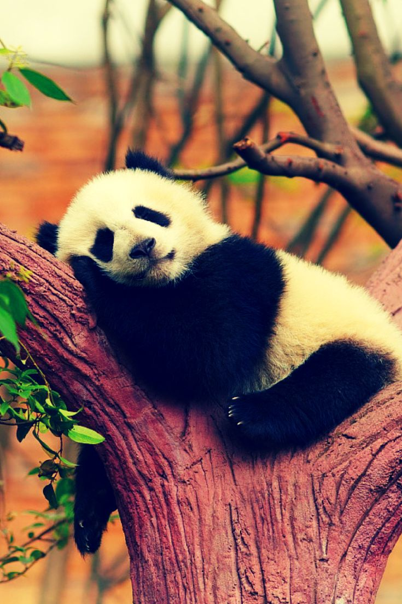

Панда большая
или гигантская, или бамбуковый медведь
Этот вид панд занесён в "Международную Красную книгу"

Длина:
1,2—1,8 м
Масса:
17—160 кг
Длина хвоста:
10—15 см(самый длинный хвост из всех панд!)
Среда обитания:
Большие панды обитают в горных регионах Китая
Питание:
Бамбук
Интересные факты про панд
Помочь пандам Австралии